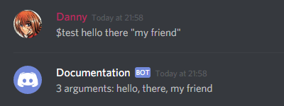
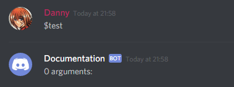
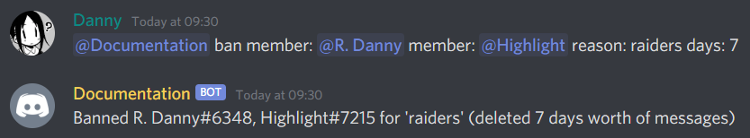
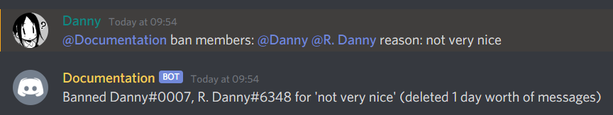
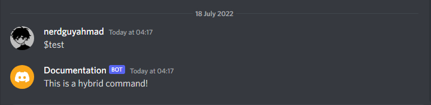
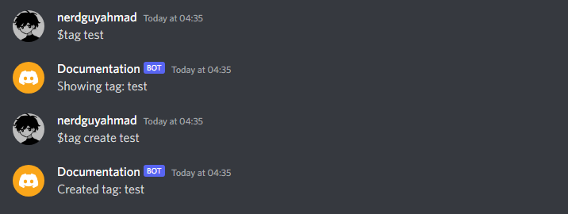
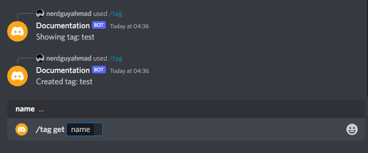

Commands¶
One of the most appealing aspects of the command extension is how easy it is to define commands and how you can arbitrarily nest groups and commands to have a rich sub-command system.
Commands are defined by attaching it to a regular Python function. The command is then invoked by the user using a similar signature to the Python function.
Warning
You must have access to the message_content intent for the commands extension
to function. This must be set both in the developer portal and within your code.
Failure to do this will result in your bot not responding to any of your commands.
For example, in the given command definition:
@bot.command()
async def foo(ctx, arg):
await ctx.send(arg)
With the following prefix ($), it would be invoked by the user via:
$foo abc
A command must always have at least one parameter, ctx, which is the Context as the first one.
There are two ways of registering a command. The first one is by using Bot.command() decorator,
as seen in the example above. The second is using the command() decorator followed by
Bot.add_command() on the instance.
Essentially, these two are equivalent:
import discord
from discord.ext import commands
intents = discord.Intents.default()
intents.message_content = True
bot = commands.Bot(command_prefix='$', intents=intents)
@bot.command()
async def test(ctx):
pass
# or:
@commands.command()
async def test(ctx):
pass
bot.add_command(test)
Since the Bot.command() decorator is shorter and easier to comprehend, it will be the one used throughout the
documentation here.
Any parameter that is accepted by the Command constructor can be passed into the decorator. For example, to change
the name to something other than the function would be as simple as doing this:
@bot.command(name='list')
async def _list(ctx, arg):
pass
Parameters¶
Since we define commands by making Python functions, we also define the argument passing behaviour by the function parameters.
Certain parameter types do different things in the user side and most forms of parameter types are supported.
Positional¶
The most basic form of parameter passing is the positional parameter. This is where we pass a parameter as-is:
@bot.command()
async def test(ctx, arg):
await ctx.send(arg)
On the bot using side, you can provide positional arguments by just passing a regular string:
To make use of a word with spaces in between, you should quote it:
As a note of warning, if you omit the quotes, you will only get the first word:
Since positional arguments are just regular Python arguments, you can have as many as you want:
@bot.command()
async def test(ctx, arg1, arg2):
await ctx.send(f'You passed {arg1} and {arg2}')
Variable¶
Sometimes you want users to pass in an undetermined number of parameters. The library supports this similar to how variable list parameters are done in Python:
@bot.command()
async def test(ctx, *args):
arguments = ', '.join(args)
await ctx.send(f'{len(args)} arguments: {arguments}')
This allows our user to accept either one or many arguments as they please. This works similar to positional arguments, so multi-word parameters should be quoted.
For example, on the bot side:
If the user wants to input a multi-word argument, they have to quote it like earlier:

Do note that similar to the Python function behaviour, a user can technically pass no arguments at all:

Since the args variable is a tuple,
you can do anything you would usually do with one.
Keyword-Only Arguments¶
When you want to handle parsing of the argument yourself or do not feel like you want to wrap multi-word user input into quotes, you can ask the library to give you the rest as a single argument. We do this by using a keyword-only argument, seen below:
@bot.command()
async def test(ctx, *, arg):
await ctx.send(arg)
Warning
You can only have one keyword-only argument due to parsing ambiguities.
On the bot side, we do not need to quote input with spaces:
Do keep in mind that wrapping it in quotes leaves it as-is:
By default, the keyword-only arguments are stripped of white space to make it easier to work with. This behaviour can be
toggled by the Command.rest_is_raw argument in the decorator.
Invocation Context¶
As seen earlier, every command must take at least a single parameter, called the Context.
This parameter gives you access to something called the “invocation context”. Essentially all the information you need to know how the command was executed. It contains a lot of useful information:
Context.guildreturns theGuildof the command, if any.Context.messagereturns theMessageof the command.Context.authorreturns theMemberorUserthat called the command.Context.send()to send a message to the channel the command was used in.
The context implements the abc.Messageable interface, so anything you can do on a abc.Messageable you
can do on the Context.
Converters¶
Adding bot arguments with function parameters is only the first step in defining your bot’s command interface. To actually make use of the arguments, we usually want to convert the data into a target type. We call these Converters.
Converters come in a few flavours:
A regular callable object that takes an argument as a sole parameter and returns a different type.
A custom class that inherits from
Converter.
Basic Converters¶
At its core, a basic converter is a callable that takes in an argument and turns it into something else.
For example, if we wanted to add two numbers together, we could request that they are turned into integers for us by specifying the converter:
@bot.command()
async def add(ctx, a: int, b: int):
await ctx.send(a + b)
We specify converters by using something called a function annotation. This is a Python 3 exclusive feature that was introduced in PEP 3107.
This works with any callable, such as a function that would convert a string to all upper-case:
def to_upper(argument):
return argument.upper()
@bot.command()
async def up(ctx, *, content: to_upper):
await ctx.send(content)
bool¶
Unlike the other basic converters, the bool converter is treated slightly different. Instead of casting directly to the bool type, which would result in any non-empty argument returning True, it instead evaluates the argument as True or False based on its given content:
if lowered in ('yes', 'y', 'true', 't', '1', 'enable', 'on'):
return True
elif lowered in ('no', 'n', 'false', 'f', '0', 'disable', 'off'):
return False
Advanced Converters¶
Sometimes a basic converter doesn’t have enough information that we need. For example, sometimes we want to get some
information from the Message that called the command or we want to do some asynchronous processing.
For this, the library provides the Converter interface. This allows you to have access to the
Context and have the callable be asynchronous. Defining a custom converter using this interface requires
overriding a single method, Converter.convert().
An example converter:
import random
class Slapper(commands.Converter):
async def convert(self, ctx, argument):
to_slap = random.choice(ctx.guild.members)
return f'{ctx.author} slapped {to_slap} because *{argument}*'
@bot.command()
async def slap(ctx, *, reason: Slapper):
await ctx.send(reason)
The converter provided can either be constructed or not. Essentially these two are equivalent:
@bot.command()
async def slap(ctx, *, reason: Slapper):
await ctx.send(reason)
# is the same as...
@bot.command()
async def slap(ctx, *, reason: Slapper()):
await ctx.send(reason)
Having the possibility of the converter be constructed allows you to set up some state in the converter’s __init__ for
fine tuning the converter. An example of this is actually in the library, clean_content.
@bot.command()
async def clean(ctx, *, content: commands.clean_content):
await ctx.send(content)
# or for fine-tuning
@bot.command()
async def clean(ctx, *, content: commands.clean_content(use_nicknames=False)):
await ctx.send(content)
If a converter fails to convert an argument to its designated target type, the BadArgument exception must be
raised.
Inline Advanced Converters¶
If we don’t want to inherit from Converter, we can still provide a converter that has the
advanced functionalities of an advanced converter and save us from specifying two types.
For example, a common idiom would be to have a class and a converter for that class:
class JoinDistance:
def __init__(self, joined, created):
self.joined = joined
self.created = created
@property
def delta(self):
return self.joined - self.created
class JoinDistanceConverter(commands.MemberConverter):
async def convert(self, ctx, argument):
member = await super().convert(ctx, argument)
return JoinDistance(member.joined_at, member.created_at)
@bot.command()
async def delta(ctx, *, member: JoinDistanceConverter):
is_new = member.delta.days < 100
if is_new:
await ctx.send("Hey you're pretty new!")
else:
await ctx.send("Hm you're not so new.")
This can get tedious, so an inline advanced converter is possible through a classmethod() inside the type:
class JoinDistance:
def __init__(self, joined, created):
self.joined = joined
self.created = created
@classmethod
async def convert(cls, ctx, argument):
member = await commands.MemberConverter().convert(ctx, argument)
return cls(member.joined_at, member.created_at)
@property
def delta(self):
return self.joined - self.created
@bot.command()
async def delta(ctx, *, member: JoinDistance):
is_new = member.delta.days < 100
if is_new:
await ctx.send("Hey you're pretty new!")
else:
await ctx.send("Hm you're not so new.")
Discord Converters¶
Working with Discord Models is a fairly common thing when defining commands, as a result the library makes working with them easy.
For example, to receive a Member you can just pass it as a converter:
@bot.command()
async def joined(ctx, *, member: discord.Member):
await ctx.send(f'{member} joined on {member.joined_at}')
When this command is executed, it attempts to convert the string given into a Member and then passes it as a
parameter for the function. This works by checking if the string is a mention, an ID, a nickname, a username + discriminator,
or just a regular username. The default set of converters have been written to be as easy to use as possible.
A lot of discord models work out of the gate as a parameter:
Object(since v2.0)Message(since v1.1)PartialMessage(since v1.7)abc.GuildChannel(since 2.0)StageChannel(since v1.7)ForumChannel(since v2.0)Guild(since v1.7)Thread(since v2.0)GuildSticker(since v2.0)ScheduledEvent(since v2.0)
Having any of these set as the converter will intelligently convert the argument to the appropriate target type you specify.
Under the hood, these are implemented by the Advanced Converters interface. A table of the equivalent converter is given below:
Discord Class |
Converter |
By providing the converter it allows us to use them as building blocks for another converter:
class MemberRoles(commands.MemberConverter):
async def convert(self, ctx, argument):
member = await super().convert(ctx, argument)
return [role.name for role in member.roles[1:]] # Remove everyone role!
@bot.command()
async def roles(ctx, *, member: MemberRoles):
"""Tells you a member's roles."""
await ctx.send('I see the following roles: ' + ', '.join(member))
Special Converters¶
The command extension also has support for certain converters to allow for more advanced and intricate use cases that go beyond the generic linear parsing. These converters allow you to introduce some more relaxed and dynamic grammar to your commands in an easy to use manner.
typing.Union¶
A typing.Union is a special type hint that allows for the command to take in any of the specific types instead of
a singular type. For example, given the following:
import typing
@bot.command()
async def union(ctx, what: typing.Union[discord.TextChannel, discord.Member]):
await ctx.send(what)
The what parameter would either take a discord.TextChannel converter or a discord.Member converter.
The way this works is through a left-to-right order. It first attempts to convert the input to a
discord.TextChannel, and if it fails it tries to convert it to a discord.Member. If all converters fail,
then a special error is raised, BadUnionArgument.
Note that any valid converter discussed above can be passed in to the argument list of a typing.Union.
typing.Optional¶
A typing.Optional is a special type hint that allows for “back-referencing” behaviour. If the converter fails to
parse into the specified type, the parser will skip the parameter and then either None or the specified default will be
passed into the parameter instead. The parser will then continue on to the next parameters and converters, if any.
Consider the following example:
import typing
@bot.command()
async def bottles(ctx, amount: typing.Optional[int] = 99, *, liquid="beer"):
await ctx.send(f'{amount} bottles of {liquid} on the wall!')
In this example, since the argument could not be converted into an int, the default of 99 is passed and the parser
resumes handling, which in this case would be to pass it into the liquid parameter.
Note
This converter only works in regular positional parameters, not variable parameters or keyword-only parameters.
typing.Literal¶
New in version 2.0.
A typing.Literal is a special type hint that requires the passed parameter to be equal to one of the listed values
after being converted to the same type. For example, given the following:
from typing import Literal
@bot.command()
async def shop(ctx, buy_sell: Literal['buy', 'sell'], amount: Literal[1, 2], *, item: str):
await ctx.send(f'{buy_sell.capitalize()}ing {amount} {item}(s)!')
The buy_sell parameter must be either the literal string "buy" or "sell" and amount must convert to the
int 1 or 2. If buy_sell or amount don’t match any value, then a special error is raised,
BadLiteralArgument. Any literal values can be mixed and matched within the same typing.Literal converter.
Note that typing.Literal[True] and typing.Literal[False] still follow the bool converter rules.
typing.Annotated¶
New in version 2.0.
A typing.Annotated is a special type introduced in Python 3.9 that allows the type checker to see one type, but allows the library to see another type. This is useful for appeasing the type checker for complicated converters. The second parameter of Annotated must be the converter that the library should use.
For example, given the following:
from typing import Annotated
@bot.command()
async def fun(ctx, arg: Annotated[str, lambda s: s.upper()]):
await ctx.send(arg)
The type checker will see arg as a regular str but the library will know you wanted to change the input into all upper-case.
Note
For Python versions below 3.9, it is recommended to install the typing_extensions library and import Annotated from there.
Greedy¶
The Greedy converter is a generalisation of the typing.Optional converter, except applied
to a list of arguments. In simple terms, this means that it tries to convert as much as it can until it can’t convert
any further.
Consider the following example:
@bot.command()
async def slap(ctx, members: commands.Greedy[discord.Member], *, reason='no reason'):
slapped = ", ".join(x.name for x in members)
await ctx.send(f'{slapped} just got slapped for {reason}')
When invoked, it allows for any number of members to be passed in:
The type passed when using this converter depends on the parameter type that it is being attached to:
Positional parameter types will receive either the default parameter or a
listof the converted values.Variable parameter types will be a
tupleas usual.Keyword-only parameter types will be the same as if
Greedywas not passed at all.
Greedy parameters can also be made optional by specifying an optional value.
When mixed with the typing.Optional converter you can provide simple and expressive command invocation syntaxes:
import typing
@bot.command()
async def ban(ctx, members: commands.Greedy[discord.Member],
delete_days: typing.Optional[int] = 0, *,
reason: str):
"""Mass bans members with an optional delete_days parameter"""
delete_seconds = delete_days * 86400 # one day
for member in members:
await member.ban(delete_message_seconds=delete_seconds, reason=reason)
This command can be invoked any of the following ways:
$ban @Member @Member2 spam bot
$ban @Member @Member2 7 spam bot
$ban @Member spam
Warning
The usage of Greedy and typing.Optional are powerful and useful, however as a
price, they open you up to some parsing ambiguities that might surprise some people.
For example, a signature expecting a typing.Optional of a discord.Member followed by a
int could catch a member named after a number due to the different ways a
MemberConverter decides to fetch members. You should take care to not introduce
unintended parsing ambiguities in your code. One technique would be to clamp down the expected syntaxes
allowed through custom converters or reordering the parameters to minimise clashes.
To help aid with some parsing ambiguities, str, None, typing.Optional and
Greedy are forbidden as parameters for the Greedy converter.
discord.Attachment¶
New in version 2.0.
The discord.Attachment converter is a special converter that retrieves an attachment from the uploaded attachments on a message. This converter does not look at the message content at all and just the uploaded attachments.
Consider the following example:
import discord
@bot.command()
async def upload(ctx, attachment: discord.Attachment):
await ctx.send(f'You have uploaded <{attachment.url}>')
When this command is invoked, the user must directly upload a file for the command body to be executed. When combined with the typing.Optional converter, the user does not have to provide an attachment.
import typing
import discord
@bot.command()
async def upload(ctx, attachment: typing.Optional[discord.Attachment]):
if attachment is None:
await ctx.send('You did not upload anything!')
else:
await ctx.send(f'You have uploaded <{attachment.url}>')
This also works with multiple attachments:
import typing
import discord
@bot.command()
async def upload_many(
ctx,
first: discord.Attachment,
second: typing.Optional[discord.Attachment],
):
if second is None:
files = [first.url]
else:
files = [first.url, second.url]
await ctx.send(f'You uploaded: {" ".join(files)}')
In this example the user must provide at least one file but the second one is optional.
As a special case, using Greedy will return the remaining attachments in the message, if any.
import discord
from discord.ext import commands
@bot.command()
async def upload_many(
ctx,
first: discord.Attachment,
remaining: commands.Greedy[discord.Attachment],
):
files = [first.url]
files.extend(a.url for a in remaining)
await ctx.send(f'You uploaded: {" ".join(files)}')
Note that using a discord.Attachment converter after a Greedy of discord.Attachment will always fail since the greedy had already consumed the remaining attachments.
If an attachment is expected but not given, then MissingRequiredAttachment is raised to the error handlers.
FlagConverter¶
New in version 2.0.
A FlagConverter allows the user to specify user-friendly “flags” using PEP 526 type annotations
or a syntax more reminiscent of the dataclasses module.
For example, the following code:
from discord.ext import commands
import discord
class BanFlags(commands.FlagConverter):
member: discord.Member
reason: str
days: int = 1
@commands.command()
async def ban(ctx, *, flags: BanFlags):
plural = f'{flags.days} days' if flags.days != 1 else f'{flags.days} day'
await ctx.send(f'Banned {flags.member} for {flags.reason!r} (deleted {plural} worth of messages)')
Allows the user to invoke the command using a simple flag-like syntax:
Flags use a syntax that allows the user to not require quotes when passing in values to the flag. The goal of the flag syntax is to be as user-friendly as possible. This makes flags a good choice for complicated commands that can have multiple knobs to turn or simulating keyword-only parameters in your external command interface. It is recommended to use keyword-only parameters with the flag converter. This ensures proper parsing and behaviour with quoting.
Internally, the FlagConverter class examines the class to find flags. A flag can either be a
class variable with a type annotation or a class variable that’s been assigned the result of the flag()
function. These flags are then used to define the interface that your users will use. The annotations correspond to
the converters that the flag arguments must adhere to.
For most use cases, no extra work is required to define flags. However, if customisation is needed to control the flag name
or the default value then the flag() function can come in handy:
from typing import List
class BanFlags(commands.FlagConverter):
members: List[discord.Member] = commands.flag(name='member', default=lambda ctx: [])
This tells the parser that the members attribute is mapped to a flag named member and that
the default value is an empty list. For greater customisability, the default can either be a value or a callable
that takes the Context as a sole parameter. This callable can either be a function or a coroutine.
A positional flag can be defined by setting the positional attribute to True. This
tells the parser that the content provided before the parsing occurs is part of the flag. This is useful for commands that
require a parameter to be used first and the flags are optional, such as the following:
class BanFlags(commands.FlagConverter):
members: List[discord.Member] = commands.flag(name='member', positional=True, default=lambda ctx: [])
reason: Optional[str] = None
Note
Only one positional flag is allowed in a flag converter.
In order to customise the flag syntax we also have a few options that can be passed to the class parameter list:
# --hello world syntax
class PosixLikeFlags(commands.FlagConverter, delimiter=' ', prefix='--'):
hello: str
# /make food
class WindowsLikeFlags(commands.FlagConverter, prefix='/', delimiter=''):
make: str
# TOPIC: not allowed nsfw: yes Slowmode: 100
class Settings(commands.FlagConverter, case_insensitive=True):
topic: Optional[str]
nsfw: Optional[bool]
slowmode: Optional[int]
# Hello there --bold True
class Greeting(commands.FlagConverter):
text: str = commands.flag(positional=True)
bold: bool = False
Note
Despite the similarities in these examples to command like arguments, the syntax and parser is not a command line parser. The syntax is mainly inspired by Discord’s search bar input and as a result all flags need a corresponding value unless part of a positional flag.
Flag converters will only raise FlagError derived exceptions. If an error is raised while
converting a flag, BadFlagArgument is raised instead and the original exception
can be accessed with the original attribute.
The flag converter is similar to regular commands and allows you to use most types of converters
(with the exception of Greedy) as the type annotation. Some extra support is added for specific
annotations as described below.
typing.List¶
If a list is given as a flag annotation it tells the parser that the argument can be passed multiple times.
For example, augmenting the example above:
from discord.ext import commands
from typing import List
import discord
class BanFlags(commands.FlagConverter):
members: List[discord.Member] = commands.flag(name='member')
reason: str
days: int = 1
@commands.command()
async def ban(ctx, *, flags: BanFlags):
for member in flags.members:
await member.ban(reason=flags.reason, delete_message_days=flags.days)
members = ', '.join(str(member) for member in flags.members)
plural = f'{flags.days} days' if flags.days != 1 else f'{flags.days} day'
await ctx.send(f'Banned {members} for {flags.reason!r} (deleted {plural} worth of messages)')
This is called by repeatedly specifying the flag:

typing.Tuple¶
Since the above syntax can be a bit repetitive when specifying a flag many times, the tuple type annotation
allows for “greedy-like” semantics using a variadic tuple:
from discord.ext import commands
from typing import Tuple
import discord
class BanFlags(commands.FlagConverter):
members: Tuple[discord.Member, ...]
reason: str
days: int = 1
This allows the previous ban command to be called like this:

The tuple annotation also allows for parsing of pairs. For example, given the following code:
# point: 10 11 point: 12 13
class Coordinates(commands.FlagConverter):
point: Tuple[int, int]
Warning
Due to potential parsing ambiguities, the parser expects tuple arguments to be quoted
if they require spaces. So if one of the inner types is str and the argument requires spaces
then quotes should be used to disambiguate it from the other element of the tuple.
typing.Dict¶
A dict annotation is functionally equivalent to List[Tuple[K, V]] except with the return type
given as a dict rather than a list.
Hybrid Command Interaction¶
When used as a hybrid command, the parameters are flattened into different parameters for the application command. For example, the following converter:
class BanFlags(commands.FlagConverter):
member: discord.Member
reason: str
days: int = 1
@commands.hybrid_command()
async def ban(ctx, *, flags: BanFlags):
...
Would be equivalent to an application command defined as this:
@commands.hybrid_command()
async def ban(ctx, member: discord.Member, reason: str, days: int = 1):
...
This means that decorators that refer to a parameter by name will use the flag name instead:
class BanFlags(commands.FlagConverter):
member: discord.Member
reason: str
days: int = 1
@commands.hybrid_command()
@app_commands.describe(
member='The member to ban',
reason='The reason for the ban',
days='The number of days worth of messages to delete',
)
async def ban(ctx, *, flags: BanFlags):
...
For ease of use, the flag() function accepts a description keyword argument to allow you to pass descriptions inline:
class BanFlags(commands.FlagConverter):
member: discord.Member = commands.flag(description='The member to ban')
reason: str = commands.flag(description='The reason for the ban')
days: int = commands.flag(default=1, description='The number of days worth of messages to delete')
@commands.hybrid_command()
async def ban(ctx, *, flags: BanFlags):
...
Likewise, use of the name keyword argument allows you to pass renames for the parameter, similar to the rename() decorator.
Note that in hybrid command form, a few annotations are unsupported due to Discord limitations:
typing.Tupletyping.Listtyping.Dict
Note
Only one flag converter is supported per hybrid command. Due to the flag converter’s way of working, it is unlikely for a user to have two of them in one signature.
Parameter Metadata¶
parameter() assigns custom metadata to a Command’s parameter.
This is useful for:
Custom converters as annotating a parameter with a custom converter works at runtime, type checkers don’t like it because they can’t understand what’s going on.
class SomeType: foo: int class MyVeryCoolConverter(commands.Converter[SomeType]): ... # implementation left as an exercise for the reader @bot.command() async def bar(ctx, cool_value: MyVeryCoolConverter): cool_value.foo # type checker warns MyVeryCoolConverter has no value foo (uh-oh)
However, fear not we can use
parameter()to tell type checkers what’s going on.@bot.command() async def bar(ctx, cool_value: SomeType = commands.parameter(converter=MyVeryCoolConverter)): cool_value.foo # no error (hurray)
Late binding behaviour
@bot.command() async def wave(ctx, to: discord.User = commands.parameter(default=lambda ctx: ctx.author)): await ctx.send(f'Hello {to.mention} :wave:')
Because this is such a common use-case, the library provides
Author,CurrentChannelandCurrentGuild, armed with this we can simplifywaveto:@bot.command() async def wave(ctx, to: discord.User = commands.Author): await ctx.send(f'Hello {to.mention} :wave:')
Authorand co also have other benefits like having the displayed default being filled.
Error Handling¶
When our commands fail to parse we will, by default, receive a noisy error in stderr of our console that tells us
that an error has happened and has been silently ignored.
In order to handle our errors, we must use something called an error handler. There is a global error handler, called
on_command_error() which works like any other event in the Event Reference. This global error handler is
called for every error reached.
Most of the time however, we want to handle an error local to the command itself. Luckily, commands come with local error
handlers that allow us to do just that. First we decorate an error handler function with error():
@bot.command()
async def info(ctx, *, member: discord.Member):
"""Tells you some info about the member."""
msg = f'{member} joined on {member.joined_at} and has {len(member.roles)} roles.'
await ctx.send(msg)
@info.error
async def info_error(ctx, error):
if isinstance(error, commands.BadArgument):
await ctx.send('I could not find that member...')
The first parameter of the error handler is the Context while the second one is an exception that is derived from
CommandError. A list of errors is found in the Exceptions page of the documentation.
Checks¶
There are cases when we don’t want a user to use our commands. They don’t have permissions to do so or maybe we blocked them from using our bot earlier. The commands extension comes with full support for these things in a concept called a Checks.
A check is a basic predicate that can take in a Context as its sole parameter. Within it, you have the following
options:
Return
Trueto signal that the person can run the command.Return
Falseto signal that the person cannot run the command.Raise a
CommandErrorderived exception to signal the person cannot run the command.This allows you to have custom error messages for you to handle in the error handlers.
To register a check for a command, we would have two ways of doing so. The first is using the check()
decorator. For example:
async def is_owner(ctx):
return ctx.author.id == 316026178463072268
@bot.command(name='eval')
@commands.check(is_owner)
async def _eval(ctx, *, code):
"""A bad example of an eval command"""
await ctx.send(eval(code))
This would only evaluate the command if the function is_owner returns True. Sometimes we re-use a check often and
want to split it into its own decorator. To do that we can just add another level of depth:
def is_owner():
async def predicate(ctx):
return ctx.author.id == 316026178463072268
return commands.check(predicate)
@bot.command(name='eval')
@is_owner()
async def _eval(ctx, *, code):
"""A bad example of an eval command"""
await ctx.send(eval(code))
Since an owner check is so common, the library provides it for you (is_owner()):
@bot.command(name='eval')
@commands.is_owner()
async def _eval(ctx, *, code):
"""A bad example of an eval command"""
await ctx.send(eval(code))
When multiple checks are specified, all of them must be True:
def is_in_guild(guild_id):
async def predicate(ctx):
return ctx.guild and ctx.guild.id == guild_id
return commands.check(predicate)
@bot.command()
@commands.is_owner()
@is_in_guild(41771983423143937)
async def secretguilddata(ctx):
"""super secret stuff"""
await ctx.send('secret stuff')
If any of those checks fail in the example above, then the command will not be run.
When an error happens, the error is propagated to the error handlers. If you do not
raise a custom CommandError derived exception, then it will get wrapped up into a
CheckFailure exception as so:
@bot.command()
@commands.is_owner()
@is_in_guild(41771983423143937)
async def secretguilddata(ctx):
"""super secret stuff"""
await ctx.send('secret stuff')
@secretguilddata.error
async def secretguilddata_error(ctx, error):
if isinstance(error, commands.CheckFailure):
await ctx.send('nothing to see here comrade.')
If you want a more robust error system, you can derive from the exception and raise it instead of returning False:
class NoPrivateMessages(commands.CheckFailure):
pass
def guild_only():
async def predicate(ctx):
if ctx.guild is None:
raise NoPrivateMessages('Hey no DMs!')
return True
return commands.check(predicate)
@bot.command()
@guild_only()
async def test(ctx):
await ctx.send('Hey this is not a DM! Nice.')
@test.error
async def test_error(ctx, error):
if isinstance(error, NoPrivateMessages):
await ctx.send(error)
Note
Since having a guild_only decorator is pretty common, it comes built-in via guild_only().
Global Checks¶
Sometimes we want to apply a check to every command, not just certain commands. The library supports this as well using the global check concept.
Global checks work similarly to regular checks except they are registered with the Bot.check() decorator.
For example, to block all DMs we could do the following:
@bot.check
async def globally_block_dms(ctx):
return ctx.guild is not None
Warning
Be careful on how you write your global checks, as it could also lock you out of your own bot.
Hybrid Commands¶
New in version 2.0.
commands.HybridCommand is a command that can be invoked as both a text and a slash command.
This allows you to define a command as both slash and text command without writing separate code for
both counterparts.
In order to define a hybrid command, The command callback should be decorated with
Bot.hybrid_command() decorator.
@bot.hybrid_command()
async def test(ctx):
await ctx.send("This is a hybrid command!")
The above command can be invoked as both text and slash command. Note that you have to manually
sync your CommandTree by calling sync in order
for slash commands to appear.

You can create hybrid command groups and sub-commands using the Bot.hybrid_group()
decorator.
@bot.hybrid_group(fallback="get")
async def tag(ctx, name):
await ctx.send(f"Showing tag: {name}")
@tag.command()
async def create(ctx, name):
await ctx.send(f"Created tag: {name}")
Due to a Discord limitation, slash command groups cannot be invoked directly so the fallback
parameter allows you to create a sub-command that will be bound to callback of parent group.


Due to certain limitations on slash commands, some features of text commands are not supported on hybrid commands. You can define a hybrid command as long as it meets the same subset that is supported for slash commands.
Following are currently not supported by hybrid commands:
Variable number of arguments. e.g.
*arg: intGroup commands with a depth greater than 1.
- Most
typing.Uniontypes. Unions of channel types are allowed
Unions of user types are allowed
Unions of user types with roles are allowed
- Most
Apart from that, all other features such as converters, checks, autocomplete, flags etc.
are supported on hybrid commands. Note that due to a design constraint, decorators related to application commands
such as discord.app_commands.autocomplete() should be placed below the hybrid_command() decorator.
For convenience and ease in writing code, The Context class implements
some behavioural changes for various methods and attributes:
Context.interactioncan be used to retrieve the slash command interaction.Since interaction can only be responded to once, The
Context.send()automatically determines whether to send an interaction response or a followup response.Context.defer()defers the interaction response for slash commands but shows typing indicator for text commands.